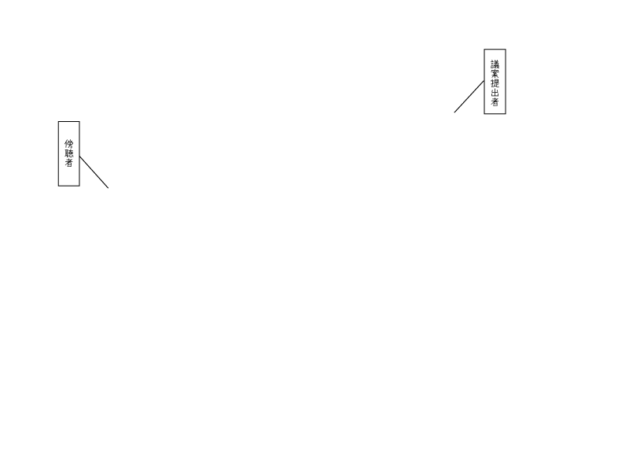
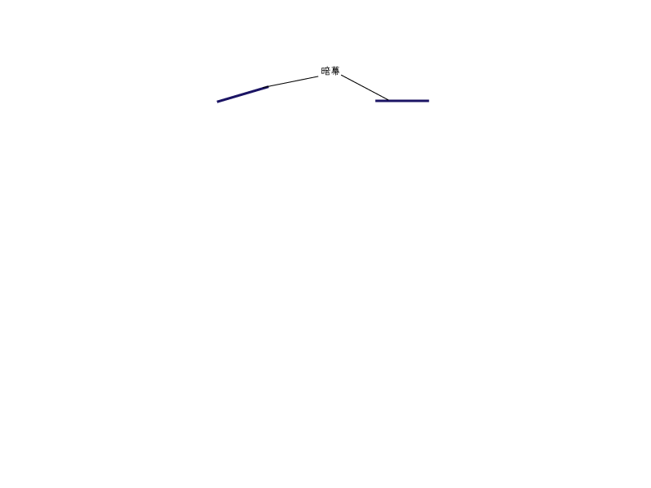
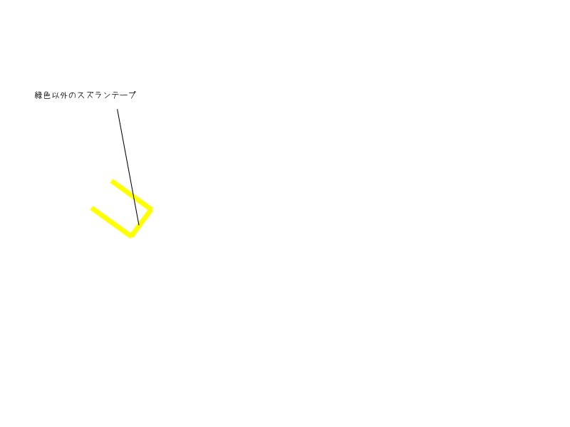
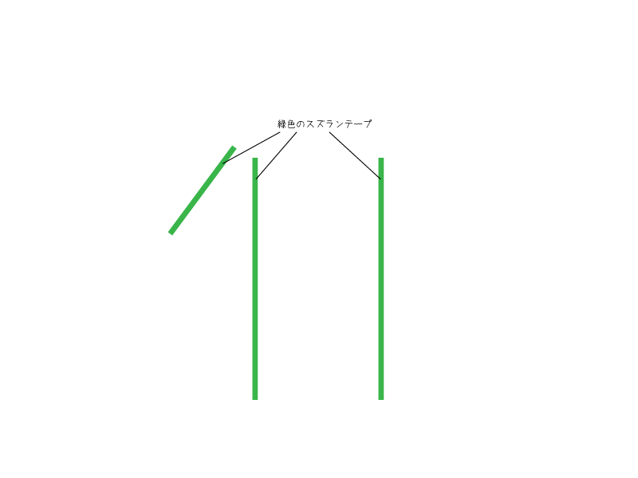
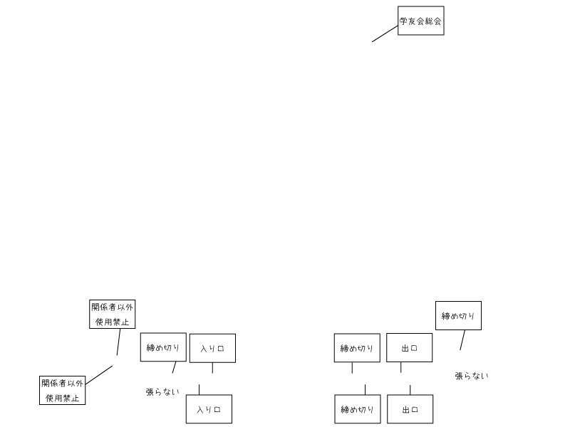

学友会総会 B202 会場配置図
    
各配置物
アンプ
看板
暗幕
緑色のスズラン
緑色以外のスズラン
参加者カード
張り紙
座席
ホワイトボード
全部
公聴会で使用していたアンプを置きます。電源は後ろから。また、舞台にあるコンセントのスイッチをONにします。
議案提出者と傍聴者と書かれた看板です。
総会中に絶対に倒れないように必要以上に机に固定してください。
議案提出者と書かれた看板は総会参加者に見えるように、傍聴者と書かれた看板は入り口から見えるように配置します。
暗幕は公聴会でいつも設置しているようにします。
3票席の両サイドを緑色のスズランテープで封鎖します。
固定はガムテープで行うのですが、布のガムテープを用い、止める箇所は最小限にとどめてください。
傍聴者席の図右側を緑色以外のスズランテープ(黄色のスズランテープなど)で封鎖します。
固定はガムテープで行うのですが、布のガムテープを用い、止める箇所は最小限にとどめてください。
参加者カード置き場です。途中退場する場合に、参加者カードをここにおいておきます？
張り紙です。扉にはそれぞれ図に記載の通りの張り紙を目線の高さに。また前の動かない黒板(右側)には学友会総会という張り紙をします。
張り紙を張る際には透明のビニルテープを用いますが、止める箇所は最小限にとどめるようにしてください。ただし、扉の開閉や風でヒラヒラしないような固定方法で止めてください。
座席の割り振りです。図の真ん中が3票席、左が2票席、右が1票席です。2票席の前には3列傍聴者席があり、その前に1列誰も座らない列を挟み、黒板・ノート書記用の席が7列あります。
常時ステージにおいてあるホワイトボードを後ろに持っていきます。後ろに持っていったら誘導にその旨を伝えあとは受付にまかせます。
会場外の廊下にもホワイトボードが必要なのですが、それはB201のものを使用します。これも運んだら受付にその旨を伝えます。